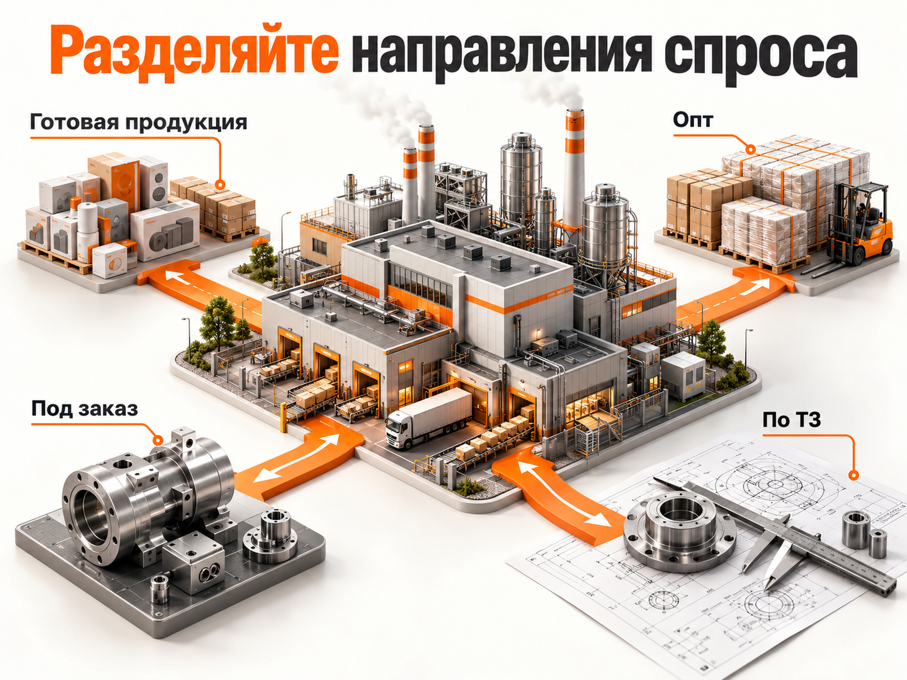

Блог о платном трафике
Реклама производственной компании: как продвигать промышленное предприятие
Реклама производственной компании или промышленного предприятия должна приводить не максимальное количество переходов, а подходящих B2B-клиентов: оптовиков, дилеров, закупщиков, предпринимателей и компании, которым нужны конкретные производственные мощности. Для промышленной компании особенно важно сразу отделять коммерческий спрос от розницы, вакансий, обучения и информационных запросов.
Поэтому я обычно начинаю не с объявлений, а с трех вопросов: что именно предприятие продает или производит, кто принимает решение о покупке и какое действие на сайте можно считать действительно полезной заявкой. После этого выбираются рекламные каналы, структура Яндекс Директа, посадочные страницы и аналитика.
Чем реклама промышленного предприятия отличается от обычного бизнеса
Реклама промышленного предприятия обычно работает с более узким B2B-спросом, длинным циклом сделки и техническими требованиями к заказу. Здесь важнее не общий объем трафика, а соответствие клиента возможностям производства и экономике сделки.
У производственного бизнеса часто есть несколько особенностей одновременно:
- длинный цикл сделки;
- высокий или сильно различающийся средний чек;
- B2B-аудитория;
- несколько направлений производства;
- оптовые и индивидуальные заказы;
- технические требования к продукту;
- ограниченная производственная мощность;
- решение о покупке принимают несколько человек.
Например, один пользователь ищет готовую продукцию оптом, другой - изготовление партии под заказ, третий - подрядчика с определенным оборудованием или технологией. Формально они относятся к одной нише, но рекламировать им одно и то же предложение не всегда правильно.
Для производства иногда десять квалифицированных обращений полезнее сотни дешевых заявок, если большая часть из них не подходит по объему, региону или типу заказа.
Сначала нужно разделить направления спроса
Одна из частых ошибок - вести весь ассортимент и все услуги на одну страницу и пытаться продвигать их одной рекламной кампанией.
Я бы сначала разделил спрос минимум по типу задачи клиента:
- Покупка готовой продукции.
- Оптовая поставка.
- Производство под заказ.
- Изготовление по чертежам или техническому заданию.
- Контрактное производство.
- Поиск дилеров или партнеров.
Для каждого направления могут отличаться запросы, оффер, допустимая стоимость обращения и посадочная страница.

Это хорошо видно на проекте фабрики детской одежды. У фабрики было два разных направления: пошив детской одежды на заказ оптом и продажа готовой продукции. Для них сделали отдельные лендинги, потому что мотивация и поисковый спрос у этих аудиторий различались.
Как клиенты ищут промышленную компанию
Промышленную компанию редко ищут только по общему запросу вроде «производственная компания». Чаще пользователь формулирует задачу через продукт, тип заказа, технологию, характеристики или условия поставки.
Основные группы спроса выглядят так:
- конкретная продукция или изготовление нужного изделия;
- запросы с уточнениями «производитель», «завод», «оптом»;
- поиск по материалу, технологии, характеристикам, чертежу или техническому заданию;
- запросы с географией, доставкой или поставкой в конкретный регион.
Поэтому семантика для промышленной рекламы должна учитывать не только название услуги, но и то, как закупщик или технический специалист описывает свою задачу. При этом расширять семантику бесконтрольно нельзя: широкий тематический запрос способен привести много людей, которые вообще не планируют покупать.
Какие рекламные каналы подходят производственной компании
Для промышленной и производственной компании основным платным каналом при существующем сформированном спросе обычно становится Поиск Яндекса. РСЯ, SEO и отраслевые площадки решают дополнительные задачи и подключаются в зависимости от объема спроса, географии и цикла сделки.
Поиск Яндекса
Поисковая реклама работает с уже сформированным спросом. Пользователь сам вводит запрос вроде «пошив одежды оптом», «изготовление вывесок», «производство деталей по чертежам» или название конкретной продукции.
Это особенно полезно в B2B, когда клиент понимает свою задачу и уже выбирает поставщика.
Но поисковый трафик нужно фильтровать. Производственный запрос часто пересекается с розницей, ремонтом, вакансиями, обучением, самостоятельным изготовлением и информационными запросами. Поэтому после запуска я регулярно проверяю реальные поисковые фразы и исключаю нецелевые направления.
Подробнее сам принцип настройки описан в статье «Как настроить рекламу в Яндекс Директ».
РСЯ
Рекламная сеть Яндекса полезна, когда прямого поискового спроса мало или его не хватает для нужного объема заявок. Она также может работать с аудиторией, которая интересуется смежными темами, уже посещала сайт или похожа на текущих клиентов.
У производственных компаний РСЯ нельзя оценивать только по количеству кликов. Здесь особенно важны качество обращений и итоговая стоимость целевого лида.
В кейсе фабрики детской одежды именно РСЯ дала основной объем обращений: около 4 долларов за лид при рекламном бюджете примерно 500 долларов в месяц. Поиск по направлению пошива давал более горячие заявки, но стоили они около 13 долларов.
Подробнее о механике канала - в статье «Что такое РСЯ в Яндекс Директ».
SEO
Контекстная реклама дает возможность получать трафик сразу после запуска, а SEO работает на накопление органического спроса. Для производственной компании это особенно полезно, если ассортимент широкий и пользователи ищут продукцию по материалам, характеристикам, назначению, технологии или типоразмеру.
Сайт можно постепенно расширять под реальные группы спроса: категории продукции, услуги производства, технологии, отрасли применения, ответы на технические вопросы и кейсы.
При этом SEO и контекстную рекламу лучше не противопоставлять. Данные из Директа показывают, какие запросы приводят реальные заявки, а это помогает при развитии структуры сайта.
Карты, каталоги и отраслевые площадки
Они полезны не всем производствам. Если важна локальная привязка, есть шоурум, склад, точка выдачи или клиенты выбирают поставщика рядом, карточки организаций могут давать дополнительный спрос.
Для федерального B2B-производства чаще важнее поисковая реклама, сайт и отраслевые каталоги, где действительно присутствует целевая аудитория.
Как я настраиваю Яндекс Директ для производства
Сейчас в Яндекс Директе основным гибким инструментом для таких задач является Единая перфоманс-кампания. В ней можно отдельно управлять размещениями на поиске, в РСЯ и других доступных площадках.
Но сама форма кампании не решает задачу. Результат зависит от того, как собрана вся связка.
1. Разделяю продукты и услуги
Если компания производит несколько разных групп продукции, я не объединяю их автоматически в одну рекламную логику. Отдельное направление должно получить свой оффер, набор запросов и посадочную страницу, если поведение аудитории действительно различается.
2. Собираю не только очевидные ключевые фразы
В промышленном B2B клиент может искать не название вашей услуги, а решение своей задачи: материал, технологию, тип оборудования, характеристику продукции, конкретную деталь или способ изготовления.
При этом семантику нельзя расширять бесконтрольно. Широкий тематический запрос способен привести много людей, которые вообще не планируют покупать.
3. Настраиваю аналитику до запуска
Минимум нужно считать:
- отправки форм;
- звонки;
- обращения через мессенджеры;
- запросы коммерческого предложения;
- заказы или покупки, если они происходят онлайн.
Для длинного цикла сделки я стараюсь связывать рекламу с CRM. В Яндекс Метрику можно передавать офлайн-конверсии и использовать подтвержденные действия, например квалифицированную заявку, договор или оплату. Это полезнее, чем обучать рекламу на любой отправке формы независимо от качества обращения.
4. Не оцениваю кампанию только по CPL
Дешевый лид не всегда хороший. Для производства я смотрю как минимум на четыре уровня:
- Обращение.
- Квалифицированная заявка.
- Коммерческое предложение или следующий этап продажи.
- Сделка и маржа.
Если реклама дает заявки по 500 рублей, но отдел продаж отклоняет почти все обращения, такая кампания хуже рекламы с лидами по 2000 рублей, из которых регулярно получаются сделки.
Посадочная страница сильно влияет на результат
Для рекламы производства необязательно вести трафик на большую главную страницу компании. Часто эффективнее отдельная страница под конкретное направление.
На ней пользователь должен быстро увидеть:
- что именно вы производите;
- для кого работаете;
- минимальный объем заказа или партии, если он есть;
- географию и условия поставки;
- сроки изготовления или принцип расчета сроков;
- материалы и технологии;
- доступные производственные мощности, если они важны для выбора;
- фотографии реального производства и продукции;
- примеры выполненных заказов;
- сертификаты и документы, если они влияют на выбор;
- понятный способ запросить расчет или коммерческое предложение;
- возможность приложить ТЗ, спецификацию или чертеж, если заказ требует технических данных.
Если человеку приходится сначала изучать историю компании, новости и общую презентацию, а только потом искать нужный продукт, рекламный трафик теряет часть конверсии.
Подробнее о посадочных страницах - в статье «Лендинг для Яндекс Директ».
Поиск и РСЯ могут работать по-разному даже внутри одной ниши
Универсального правила «для производства работает только поиск» или «нужно обязательно запускать РСЯ» нет.
В проекте организации швейного производства основным источником стал поиск. Компания помогала брендам и предпринимателям запускать производство одежды под ключ. Заявки в среднем стоили 1500-3000 рублей, а поисковые кампании давали наиболее стабильный результат примерно по 1500 рублей за обращение.
Причина понятна: пользователь уже осознанно искал подрядчика для запуска пошива. При ограниченном бюджете логичнее было концентрироваться на этом сформированном спросе, а не распылять деньги на все возможные форматы.
В кейсе фабрики детской одежды ситуация была другой: основной объем лидов дала РСЯ. Поэтому выбор канала я делаю по фактическим данным конкретного проекта, а не по общему правилу для всей промышленности.
Кейс организации швейного производства
Еще один пример: производство наружной рекламы
В проекте производства наружной рекламы клиент изготавливал объемные буквы, световые короба, неоновые и другие вывески для бизнеса.
Изначально заявка стоила около 1500 рублей, а при небольшом среднем чеке такая экономика клиента не устраивала. После тестирования и оптимизации удалось выйти примерно на 15 лидов в неделю при стоимости обращения менее 400 рублей.
Этот пример показывает еще одну особенность производственной рекламы: нельзя оптимизировать только стоимость заявки. Попытка дополнительно снизить CPL уменьшила объем лидов. В итоге рабочей стала точка, где стоимость и количество обращений соответствовали экономике клиента.
Кейс производства наружной рекламы
Что чаще всего мешает рекламе производственной компании
Одна страница на все направления
Человек ищет конкретный продукт, а попадает на общий корпоративный сайт, где ему предлагают самостоятельно разбираться в каталоге. Чем точнее соответствует посадочная запросу, тем проще получить обращение.
Смешивание B2B и розницы
Если компания работает только с оптовыми партиями, это нужно показывать и в рекламе, и на сайте. Иначе бюджет уходит на пользователей, которым нужна одна единица товара.
Оптимизация на слишком легкую цель
Просмотр страницы, нажатие кнопки или начало заполнения формы могут происходить часто, но не означают реального интереса. Если таких событий много, алгоритм может обучаться на удобную, но бесполезную аудиторию.
Отсутствие обратной связи из отдела продаж
Специалист по рекламе видит отправленные формы, но не знает, сколько из них соответствуют требованиям производства. Без этой информации сложно отличить дешевый трафик от действительно прибыльного.
Оценка рекламы слишком рано
В B2B сделка может происходить заметно позже первого обращения. Если смотреть только на продажи первых нескольких дней, часть результата останется за пределами отчета. Поэтому для производственной компании особенно полезна связь Метрики, CRM и реальных статусов сделок.
Какие показатели я считаю основными
Для производственной рекламы я бы не ставил CTR или цену клика в центр отчета. Они нужны для диагностики, но бизнесу важнее:
- количество целевых обращений;
- стоимость квалифицированной заявки;
- доля подходящих лидов;
- количество коммерческих предложений;
- стоимость привлеченной сделки;
- выручка и маржа по сделкам из рекламы.
Если цикл продажи длинный, промежуточные показатели тоже нужны. Но они должны помогать понять, приближается ли реклама к деньгам, а не заменять итоговый результат красивой статистикой кабинета.
Сколько стоит реклама производственной компании
Универсального бюджета нет. Стоимость зависит от спроса, региона, конкуренции, среднего чека, качества сайта и допустимой цены привлечения клиента.
Я считаю бюджет от экономики проекта. Сначала определяю, сколько компания может платить за квалифицированную заявку или клиента, затем оцениваю доступный спрос и возможный объем теста.
Для маленького производства с ограниченной мощностью может быть бессмысленно покупать максимально возможный объем трафика. Для крупного предприятия, наоборот, слишком маленький бюджет не даст достаточно данных и не позволит проверить несколько направлений.
Когда производственной компании имеет смысл запускать рекламу
Яндекс Директ имеет смысл, если выполняются хотя бы базовые условия:
- есть понятный продукт или услуга;
- компания действительно может обработать новые обращения;
- понятна география продаж;
- есть сайт или можно сделать отдельную посадочную страницу;
- можно определить полезное целевое действие;
- отдел продаж способен отмечать качество лидов.
Если этих данных нет, я бы сначала подготовил воронку, а уже потом увеличивал рекламный бюджет.
На главной странице naklikay.ru собраны мои кейсы по Яндекс Директу и платному трафику. Для производственных проектов я работаю с рекламой как с единой системой: спрос, объявления, посадочная страница, аналитика и качество заявок.